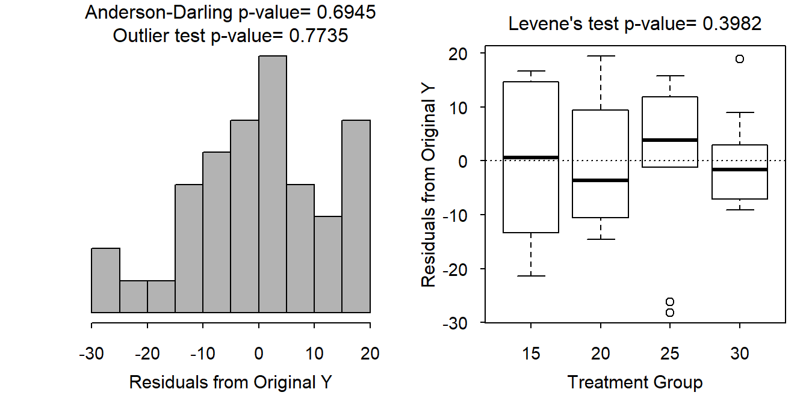

Temperature and Turtle Hatchlings I
- The individuals appear to be independent both within and among groups as each egg was put into its own container and randomly given a temperature such that the results for any one egg would not impact the results of any other egg given the same (within) or different (among) temperature.
- The Levene’s test suggests that the variances are equal among the temperature groups (p=0.3982). The boxplots of residuals are not approximately equal in height (Figure 1-Right). Levene’s test though is definitive and, thus, the variances are approximately equal.
- The Anderson-Darling normality test suggests that the residuals are normally distributed (p=0.6945). The histogram of the residuals is slightly (but not strongly) left-skewed (Figure 1-Left). The Anderson-Darling test though is definitive and, thus, the residuals appear to be normal.
- There are no significant outliers (p=0.7735), though the residual plot suggests possible outliers in the 25oC and 30oC groups (Figure 1).

Figure 1: Histogram of residuals (left) and boxplot of residuals by treatment group (right) for the turtle study.
R Appendix.
d <- read.csv("turtles.csv")
d$Temperature <- factor(d$Temperature)
lm1 <- lm(Days~Temperature,data=d)
transChooser(lm1)